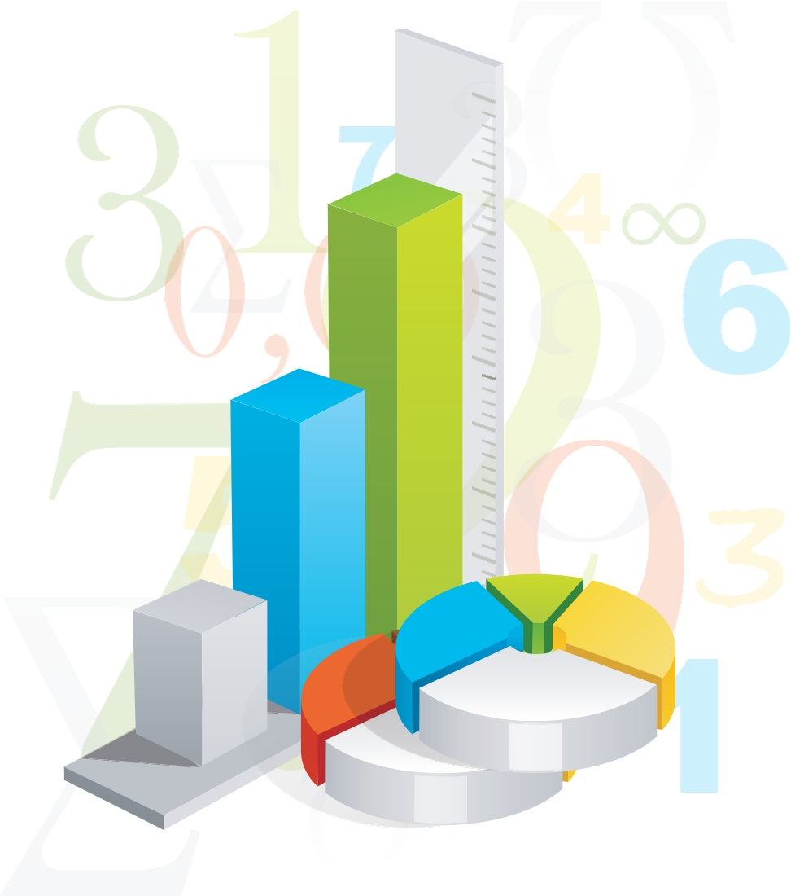

Orígenes matemáticos y filosóficos de la IA
Mucho antes de que existieran las computadoras modernas, filósofos y matemáticos ya se preguntaban si el pensamiento podía describirse mediante reglas lógicas. Estas ideas sentaron las bases de lo que hoy conocemos como Inteligencia Artificial.

Estadística descriptiva y visualización
Sus ideas inspiraron siglos después el concepto de razonamiento computacional. La estadística descriptiva resume datos usando medidas como media, mediana, moda, desviación estándar y percentiles.
Experimentación y validación
Son procesos fundamentales en la era digital actual, permitiendo probar hipótesis, productos o sistemas en laboratorios digitales controlados, gemelos digitales o simulaciones 3D.

George Boole y el álgebra booleana
Boole formalizó la lógica con operaciones matemáticas que más tarde permitirían el desarrollo de circuitos digitales y lenguajes de programación.

Segmentación y Patrones Ocultos
Mediante el aprendizaje no supervisado, los algoritmos analizan grandes volúmenes de datos para encontrar agrupaciones naturales (clustering) y revelar relaciones o anomalías que escapan al análisis humano tradicional.
“Podemos considerar que el razonamiento es una forma de cálculo.” — Leibniz